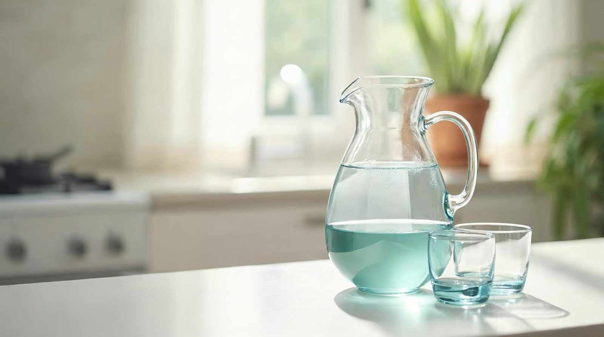
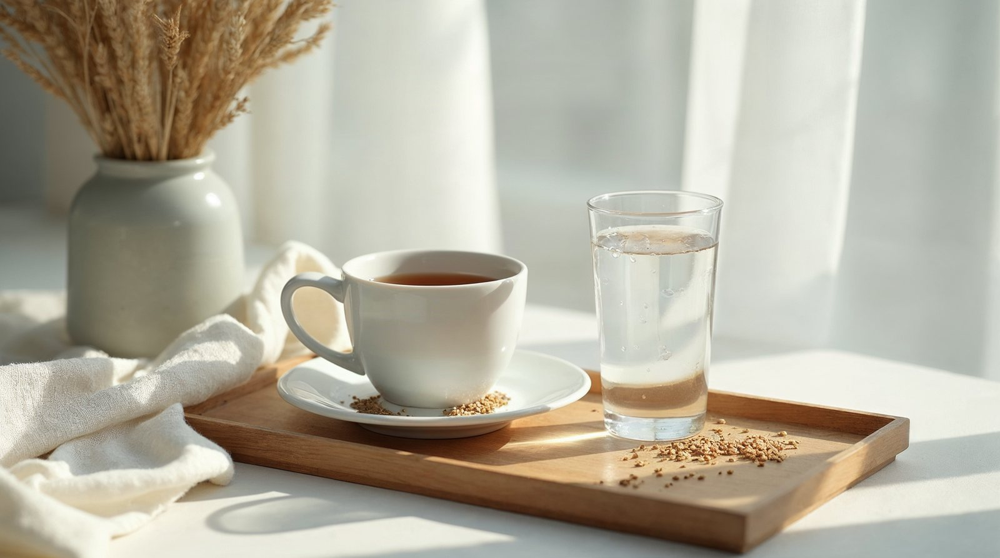
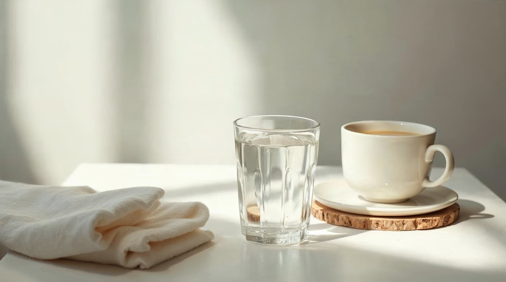

이종호 한의사 감수좋은꿈참사랑한의원 대표원장 (한의사 면허번호 19769)발행 2026-11-26 · 수정 2026-11-26
이 글의 차례
영화관에 들어가기 전에 화장실에 다녀왔는데, 영화가 반도 지나지 않아 또 마렵습니다. 옆 사람에게 미안해하며 줄 사이를 빠져나가는 일이 몇 번 반복되자, 이제는 영화 보러 가자는 말이 반갑지 않습니다. 회의실에서도, 버스에서도 늘 화장실 위치부터 먼저 찾게 됩니다.
빈뇨는 소변을 너무 자주 보는 상태를 말합니다. 보통 깨어 있는 동안 여덟 번이 넘으면 잦다고 보지만, 숫자보다 중요한 것은 그 횟수 때문에 생활이 불편한지입니다. 하루 열 번을 보아도 불편하지 않은 분이 있고, 일곱 번이어도 늘 마음이 쓰이는 분이 있습니다.
진료실에서 이런 말씀을 자주 듣습니다. "검사하면 다 괜찮다는데 왜 이렇게 자주 마려운지 모르겠어요." 검사에서 뚜렷한 이상이 없다는 말이 안심이 되면서도, 정작 불편은 그대로라 답답하셨을 겁니다. 그 답답함에서부터 이야기를 시작하겠습니다.
빈뇨는 원인이 여러 갈래입니다. 물이나 카페인을 많이 마셔 소변이 많이 만들어지는 경우, 방광이 예민해져 조금만 차도 마려운 경우, 혈당이나 약 때문에 소변이 늘어난 경우, 긴장과 추위에 방광이 반응하는 경우가 있습니다. 이 글에서는 그 갈래를 나눠 보고, 내 소변 리듬을 찾는 방법을 정리해 보겠습니다.
왜 소변이 자주 마려울까요
콩팥은 하루 종일 피를 걸러 소변을 만들고, 이 소변은 방광에 모입니다. 방광은 늘어나는 주머니라서 어느 정도 찰 때까지는 조용히 기다리다가, 꽤 찼을 때 '이제 화장실에 가야 한다'는 신호를 뇌에 보냅니다.
건강한 방광은 보통 몇 시간에 한 번, 한 번에 넉넉한 양을 내보냅니다. 그런데 방광이 예민해지면 반쯤만 차도 급한 신호를 보내고, 그 신호가 습관처럼 굳어지면 점점 더 적은 양에도 화장실을 찾게 됩니다. 마려울까 봐 미리 다녀오는 습관이 방광을 더 작게 길들이기도 합니다.
소변이 많이 만들어지는 경우도 있습니다. 물을 아주 많이 마시거나, 커피와 녹차, 술처럼 소변을 늘리는 음료를 자주 마시거나, 혈당이 높아 소변으로 당이 빠져나가면 소변의 양 자체가 늘어납니다. 이때는 방광보다 들어가는 쪽을 먼저 봅니다.
한의학에서는 소변이 잦은 모습을 소변빈삭(小便頻數)이라 부르며, 아랫배가 차고 아래쪽 기운이 약해진 경우와 아래에 열이 몰려 방광이 예민해진 경우로 나눠 살펴 왔습니다. 추우면 더 잦아지는지, 소변이 맑고 많은지 진하고 적은지를 함께 여쭙는 것도 이 때문입니다.
빈뇨의 갈래, 이렇게 나눠 봅니다
마시는 양이 많은 경우
하루 물을 2리터 넘게 의식적으로 마시거나, 커피를 서너 잔 이상 드시거나, 차를 달고 사는 분이라면 소변이 잦은 것이 자연스러운 결과일 수 있습니다. 한 번에 보는 소변 양이 넉넉하고 색이 아주 옅다면 이 갈래를 먼저 생각합니다.
방광이 예민한 경우
한 번에 보는 양은 적은데 자주, 갑자기 급하게 마렵다면 방광이 예민해진 과민성 방광을 생각합니다. 참기 힘든 급한 느낌이 특징이며, 밤에도 자주 깨는 경우가 많습니다. 마시는 양과 상관없이 마렵다는 분이 많습니다.
갈증과 함께 오는 경우
물을 마셔도 목이 자꾸 마르고, 소변이 많고 잦으며, 먹는데도 체중이 빠진다면 혈당을 먼저 확인합니다. 이 갈래는 내과에서 혈액검사로 확인하는 것이 출발점입니다. 혈당이 경계라는 말을 들은 적이 있다면 꼭 함께 알려 주세요.
긴장이나 추위와 함께 오는 경우
시험이나 발표 전, 중요한 약속 전에만 유독 잦아지거나, 추운 날 밖에 나가면 화장실을 자주 찾는 분이 있습니다. 집에서 편하게 쉬는 날은 괜찮다면 이 갈래를 생각합니다. 방광은 마음과 몸의 온도에 꽤 민감하게 반응합니다.

빈뇨와 함께 살펴야 하는 것들
소변이 잦으면서 따갑거나 아랫배가 아프다면 방광염 같은 염증을 먼저 확인해야 합니다. 이때는 소변 검사가 필요합니다. 남성분이라면 소변 줄기가 약해지고 남은 느낌이 있는지도 여쭙습니다. 전립선 비대가 함께 있을 수 있습니다.
여성분이라면 임신 가능성과 생리 주기를 여쭙습니다. 임신 초기에는 소변이 잦아지는 일이 흔하고, 자궁근종처럼 방광을 누르는 변화가 있어도 소변이 잦을 수 있습니다. 출산 뒤나 갱년기 무렵부터 시작되었다면 골반바닥과 점막의 변화도 함께 생각합니다.
드시는 약도 중요합니다. 이뇨제가 들어간 혈압약, 일부 당뇨약은 소변을 늘릴 수 있습니다. 약을 바꾸는 일은 처방한 의사와 상의하셔야 하지만, 약을 드시기 시작한 시기와 빈뇨가 시작된 시기가 겹치는지 떠올려 보시면 실마리가 됩니다.

카페인과 소변을 늘리는 음료는 생각보다 가까이 있습니다
커피만 줄이면 된다고 생각하시는 분이 많은데, 카페인은 녹차와 홍차, 콜라, 에너지 음료, 초콜릿에도 들어 있습니다. 하루에 마신 음료를 모두 적어 보면 예상보다 카페인이 많아 놀라는 분이 꽤 계십니다.
탄산음료와 인공 감미료, 매운 음식, 신 과일 주스는 방광을 자극한다고 알려져 있어 예민한 분은 함께 살펴봅니다. 술은 소변을 늘리는 데다 밤잠까지 얕게 만들어, 다음 날 아침까지 화장실을 자주 찾게 만들기도 합니다.
한꺼번에 모두 끊기보다 하나씩 줄여 보며 변화를 확인하는 편이 좋습니다. 커피를 한 잔 줄인 주와 그대로인 주를 배뇨 일기로 비교해 보면, 내 방광이 무엇에 민감한지 숫자로 드러납니다.
예를 들면 이런 경우입니다
실제 어느 분의 사연이 아니라, 진료실에서 자주 보는 모습을 바탕으로 그려 본 장면입니다.
예를 들어 건강을 챙긴다며 하루 물 3리터를 목표로 마시고, 오전에 아메리카노 두 잔, 오후에 녹차를 드시는 직장인이라면, 빈뇨가 방광 탓이라기보다 마시는 양 탓인 경우가 많습니다. 갈증이 날 때 마시는 쪽으로 물을 조정하고, 커피를 한 잔 줄여 보며 변화를 지켜봅니다.
시험을 앞둔 수험생이 시험장에만 들어가면 화장실이 급해진다면, 긴장이 방광을 예민하게 만든 경우를 생각합니다. 시험 당일 아침 커피를 줄이고, 숨을 길게 내쉬는 연습과 함께 평소 소변을 미리 보는 습관을 조금씩 줄여 보자고 말씀드립니다.
먼저 이렇게 여쭙니다
- 깨어 있는 동안 소변을 몇 번 보시나요? 밤에는 몇 번 깨시나요?
- 한 번에 보는 소변 양은 넉넉한가요, 조금씩인가요?
- 갑자기 급하게 마려워 참기 힘든 때가 있나요?
- 하루에 물과 커피, 차, 술은 얼마나 드시나요?
- 목이 자주 마르거나, 체중이 변하거나, 혈당이 높다는 말을 들은 적이 있나요?
- 소변이 따갑거나, 줄기가 약하거나, 다 본 뒤에도 남은 느낌이 있나요?
언제부터 잦아졌는지, 그 무렵 생활에 어떤 변화가 있었는지도 여쭙습니다. 새 직장, 이사, 새로 시작한 약이나 운동, 다이어트가 계기가 되는 경우가 생각보다 많습니다.
한 번 방광염을 앓고 난 뒤부터 소변에 신경이 쓰이기 시작했다는 분도 많습니다. 염증은 가라앉았는데 그때의 불편한 기억이 남아 방광의 작은 신호에도 예민하게 반응하게 된 것입니다. 이런 흐름도 함께 떠올려 말씀해 주시면 좋습니다.
배뇨 일기, 이렇게 써 봅니다
빈뇨를 살필 때 가장 좋은 도구는 배뇨 일기입니다. 사흘만 적어 보셔도 마시는 양과 보는 양, 그 사이의 관계가 숫자로 드러납니다. 진료실에서 기억에 기대어 말씀하실 때보다 훨씬 정확한 그림이 그려집니다.
소변을 볼 때마다 시각과 양을 적습니다. 양은 계량컵이나 눈금이 있는 종이컵에 받아 재면 좋고, 어렵다면 많음, 보통, 적음으로 적으셔도 됩니다. 마신 음료의 종류와 양, 시각도 함께 적고, 갑자기 급했던 때나 샌 때가 있으면 표시해 둡니다.
사흘 치를 모아 보면 하루에 마신 양과 본 양이 대략 맞는지, 한 번에 보는 양이 얼마나 되는지, 특정 음료 뒤에 잦아지는지가 보입니다. 이 기록을 가져오시면 생활에서 무엇을 먼저 바꿀지 함께 정하기가 한결 쉬워집니다.

일상에서 먼저 해 볼 수 있는 것
빈뇨는 마시는 습관과 화장실 가는 습관을 조금씩 바꾸는 것만으로도 달라지는 경우가 많습니다. 아래 가운데 지금 가장 쉬운 것부터 하나 골라 보세요.
- 물은 억지로 많이 마시기보다 갈증에 맞춰 하루 동안 나눠 마시기
- 커피, 녹차, 탄산음료, 술은 한 잔씩 줄여 보며 변화 지켜보기
- 마려울까 봐 미리 화장실에 가는 습관 조금씩 줄이기
- 급한 느낌이 오면 잠시 멈춰 숨을 길게 내쉬고, 한풀 꺾인 뒤 천천히 가기
- 잠들기 두세 시간 전부터 물과 국물 줄이기
- 아랫배와 허리, 발을 따뜻하게 하기
방광 훈련은 조금씩 간격을 늘려 가는 것이 핵심입니다. 지금 한 시간마다 가신다면 한 시간 십오 분으로, 몇 주 뒤에는 한 시간 반으로 늘려 보세요. 무리하게 오래 참는 것은 오히려 좋지 않으니, 내 몸이 받아들일 수 있는 만큼만 천천히 늘려 갑니다.
변비가 있다면 함께 챙겨 주세요. 장에 변이 차 있으면 방광을 눌러 소변이 더 잦아질 수 있습니다. 골반바닥 운동도 급한 느낌을 다스리는 데 도움이 되었다는 분이 많아, 하루 몇 번 짧게 해 보시길 권합니다.
한의원에서 함께 살필 수 있는 경우
- 내과와 비뇨의학과 검사에서 큰 이상은 없다는데 빈뇨가 이어지는 경우
- 아랫배와 손발이 차고, 추운 날마다 소변이 더 잦아지는 경우
- 긴장하는 자리마다 화장실이 급해져 생활이 위축된 경우
- 밤에 자주 깨서 잠과 낮의 기운까지 함께 흔들리는 경우
좋은꿈참사랑한의원에 처음 오시면 먼저 아래 '먼저 확인이 필요한' 신호가 없는지부터 봅니다. 그다음 맥을 짚고 혀를 보며, 아랫배를 눌러 차가운 자리와 긴장된 자리를 확인합니다. 배뇨 일기가 있다면 함께 보며 어느 갈래가 더 큰지 정리합니다.
그 뒤 진찰한 내용을 바탕으로 침, 뜸이나 온열 관리, 한약 상담 가운데 지금 상태에 맞는 것을 정하고, 방광 훈련과 마시는 습관을 어떻게 조정할지 함께 이야기합니다. 아랫배가 차고 기운이 빠진 모습과 긴장으로 방광이 예민해진 모습은 살피는 방향이 다릅니다. 한약을 상의할 때는 드시는 약을 모두 확인하고 신중하게 정합니다.
혈당 확인이 필요해 보이면 내과 진료를, 염증이나 전립선, 방광 자체의 확인이 필요해 보이면 비뇨의학과 진료를 함께 권합니다. 그곳에서 받은 약은 처방한 의사와 상의 없이 멈추지 않으시도록 말씀드리고, 드시는 약을 함께 정리합니다.
이렇게 기록해 오시면 상담이 쉬워집니다
배뇨 일기와 함께 아래 내용을 적어 오시면 이야기가 훨씬 수월합니다.
- 사흘 동안의 소변 시각과 양, 마신 음료의 종류와 양
- 급하게 마려웠던 때와 그때 하던 일
- 밤에 깬 횟수와 시각
- 최근 혈액검사나 소변 검사 결과
- 드시는 약 이름과 시작한 시기
기록이 완벽하지 않아도 괜찮습니다. 출근한 날과 쉬는 날을 하루씩만 비교해 보셔도, 내 방광이 어떤 날 더 바빠지는지 꽤 많은 것을 알 수 있습니다.
화장실 위치부터 찾지 않아도 되는 하루를 위해
소변이 잦으면 몸보다 마음이 먼저 지칩니다. 어디를 가든 화장실을 먼저 확인하고, 긴 회의나 영화, 여행 앞에서 망설이게 됩니다. 그렇게 조금씩 줄어든 일상이 아쉬우셨을 겁니다. 그 아쉬움을 혼자 견디지 않으셔도 됩니다.
빈뇨는 마시는 것과 화장실에 가는 습관, 몸의 온도와 긴장을 하나씩 살피다 보면 내 몸의 리듬이 보이기 시작합니다. 이번 주에는 사흘 치 배뇨 일기부터 적어 보세요. 다음에 오시면 그 기록을 함께 펼쳐 놓고 어디서부터 손볼지 이야기 나누겠습니다.
이런 증상은 먼저 확인이 필요합니다
- 물을 마셔도 갈증이 심하게 이어지고 소변이 크게 늘며 체중이 빠지는 경우
- 소변에 피가 섞이거나, 열이 나고 옆구리나 등 아래쪽이 아픈 경우
이런 신호가 있으면 한의원보다 가까운 병원이나 응급실을 먼저 찾으세요.
함께 읽으면 좋은 글
- 물을 마셔도 갈증이 계속될 때는 어떻게 하나요?
- 자다가 소변 때문에 깨면 잠과 어떤 관련이 있고, 무엇을 살펴보나요?
- 소변이 자주 마렵고 아랫배가 불편한 느낌이 자꾸 반복될 때는 어떻게 하나요?
- 공복혈당이 경계 수준이라고 들었을 때 생활에서 무엇을 살펴보나요?
- 대사 관리를 할 때 물은 하루에 얼마나 마셔야 하나요?
여쭙는 것
- 깨어 있는 동안 소변을 몇 번 보시나요? 밤에는 몇 번 깨시나요?
- 한 번에 보는 소변 양은 넉넉한가요, 조금씩인가요?
- 갑자기 급하게 마려워 참기 힘든 때가 있나요?
생활에서 해 볼 것
- 물은 억지로 많이 마시기보다 갈증에 맞춰 하루 동안 나눠 마시기
- 커피, 녹차, 탄산음료, 술은 한 잔씩 줄여 보며 변화 지켜보기
- 마려울까 봐 미리 화장실에 가는 습관 조금씩 줄이기
한의원에서 함께 살필 것
- 내과와 비뇨의학과 검사에서 큰 이상은 없다는데 빈뇨가 이어지는 경우
- 아랫배와 손발이 차고, 추운 날마다 소변이 더 잦아지는 경우
- 긴장하는 자리마다 화장실이 급해져 생활이 위축된 경우
먼저 확인이 필요한 신호
- 물을 마셔도 갈증이 심하게 이어지고 소변이 크게 늘며 체중이 빠지는 경우
- 소변에 피가 섞이거나, 열이 나고 옆구리나 등 아래쪽이 아픈 경우
한눈에 보는 표
| 구분 | 핵심 |
|---|---|
| 여쭙는 것 | 깨어 있는 동안 소변을 몇 번 보시나요? 밤에는 몇 번 깨시나요? 한 번에 보는 소변 양은 넉넉한가요, 조금씩인가요? |
| 생활에서 해 볼 것 | 물은 억지로 많이 마시기보다 갈증에 맞춰 하루 동안 나눠 마시기 커피, 녹차, 탄산음료, 술은 한 잔씩 줄여 보며 변화 지켜보기 |
| 한의원에서 함께 살필 것 | 내과와 비뇨의학과 검사에서 큰 이상은 없다는데 빈뇨가 이어지는 경우 아랫배와 손발이 차고, 추운 날마다 소변이 더 잦아지는 경우 |
| 먼저 확인이 필요한 신호 | 물을 마셔도 갈증이 심하게 이어지고 소변이 크게 늘며 체중이 빠지는 경우 소변에 피가 섞이거나, 열이 나고 옆구리나 등 아래쪽이 아픈 경우 |
자주 묻는 질문
하루에 소변을 몇 번 보면 정상인가요?
보통 깨어 있는 동안 여덟 번 안팎을 기준으로 이야기하지만, 마시는 양에 따라 달라집니다. 횟수보다 그 횟수 때문에 생활이 불편한지, 급하게 마려운 느낌이 있는지를 함께 봅니다.
물을 많이 마시는 것이 건강에 좋다고 해서 일부러 마시고 있어요.
필요한 물의 양은 사람마다, 날씨와 활동량에 따라 다릅니다. 억지로 많이 마시기보다 갈증과 소변 색을 보며 하루 동안 나눠 드시는 쪽을 권합니다.
소변이 잦으면 당뇨를 의심해야 하나요?
빈뇨의 원인은 여러 가지라 소변이 잦다고 모두 당뇨는 아닙니다. 다만 갈증이 심하고 체중이 빠진다면 내과에서 혈당 검사를 받아 보시길 권합니다.
미리 화장실에 다녀오는 습관이 나쁜가요?
외출 전이나 잠들기 전처럼 필요한 때는 괜찮습니다. 다만 마려울까 봐 수시로 미리 가는 습관이 굳으면 방광이 적은 양에도 신호를 보내도록 길들여질 수 있습니다.
좋은꿈참사랑한의원은 재진 때 지난번 이야기부터 이어서 여쭙니다. 진료시간과 예약은 오시는 길에서 확인하세요.
어디서 상담받을 수 있나요?
좋은꿈참사랑한의원은 서울 동작구 만양로2길 2 신성빌딩 3층·5층(서울 동작구 상도동, 7호선 상도역 3번 출구 근처)에 있습니다. 한의사 3명(이종호 대표원장, 조영기 수석진료원장, 정원영 진료원장)이 진료합니다. 진료시간은 평일 09:30~20:00(점심 13:00~14:00), 토·일·공휴일 09:30~15:00이며, 방문 전 전화로 확인을 권합니다. 예약은 네이버 예약, 카카오톡 상담, 전화 02-815-7510로 받습니다.
이 글은 일반적인 건강 정보이며 개인의 진단이나 치료를 대신하지 않습니다. 증상이 있거나 복용 중인 약이 있다면 진료를 통해 확인하세요. 치료 효과는 개인마다 다를 수 있습니다.
작성 기준: 일반적으로 알려져 있는 건강 정보를 참고해 정리했습니다(대표원장 감수). 증상 기록은 1~2주 동안 하루 1회, 비슷한 시간에 적어 오시면 지난 상태와 비교하기 쉽습니다.